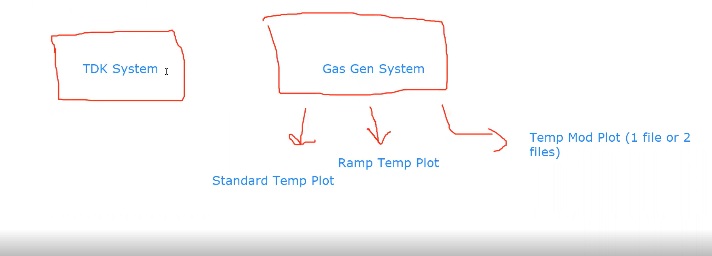

Code Review Meeting
Check in with SWE team about current implementation of script
10/06/2022
Attendance
- Gnamitha
- Tom
- Matt
- Antonio
- Elaine
Agenda
- Unfinished Tasks from Last Meeting
- Review TDK system application
- Wrap Up & Questions
- Action Items for Next Meeting
Unfinished Tasks from Last Meeting
- take a look at the broken TDK system [Elaine]
- completed and error fixed; there was a leak
- update the computer software according to calendar [Tom]
- completed; software has been updated and properly logged
- start a low humidity gas test [Matt]
- incomplete; waiting for approval from the chemistry team
- goal: anticipated to start tomorrow
Review TDK system application
- Whiteboard Overview Diagram

- Audio Recording of Review
- Video Recording of Review
Wrap Up and Questions
- Anticiated Release - one week from today
- Dev Testing - tomorrow
- User Testing - TBD
Action Items
- Set up a meeting with users for testing [Gnamitha]
- Check availability of devices [Tom]
- Start low humidity gas test [Matt]